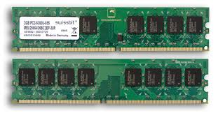
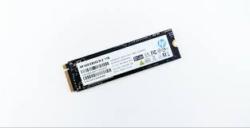

CPU (Central Processing Unit)
The brain of the computer. Responsible for carrying out instructions, calculations, and managing all functions. It determines the system's processing speed.

The brain of the computer. Responsible for carrying out instructions, calculations, and managing all functions. It determines the system's processing speed.
Temporary, high-speed storage for data the computer is actively using. More RAM allows the system to run more applications simultaneously without slowing down.

The long-term memory for the operating system, files, and programs. HDD (Hard Disk Drives) are slower and cheaper; SSD (Solid State Drives) are faster and more reliable.
